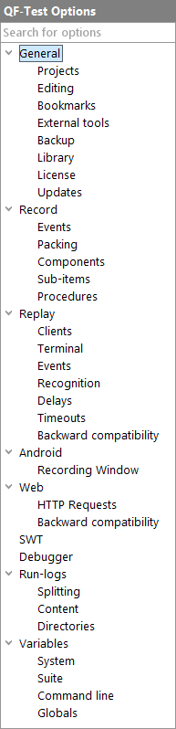

| Version 6.0.3 |
Since QF-Test is a tool that is intended for a wide range of applications, the "one size fits all" approach doesn't quite work. That's why QF-Test has a great number of options that control its functionality.
There are two kinds of options for QF-Test: user options and system options. User options adjust the behavior of QF-Test's own GUI while system options influence how tests are recorded and replayed. Each user has its own set of user options whereas system options are saved in a common system file. See section 1.6 for details about configuration files.
3.1+
Many options can have their value changed at run time from a script via
rc.setOption as described in section 46.5. Depending on whether
the option takes effect in QF-Test itself or in the SUT, the documentation for those options
shows a "Server script name" or "SUT script name" matching the constant from the
Options class. Obviously the option has to be set in a matching
'Server script' or 'SUT script' node. Where the option's value can be
selected from a drop-down list, the documentation also lists the constants that can be
specified as the option's value.
Though the number of options may look daunting, don't let yourself be deterred by it. All options have reasonable default values, so QF-Test works well out of the box for most cases. However, if you find you need to change something or simply want to explore the range of QF-Test's abilities, this chapter is for you.
The options can be set in the dialog available through the menu item »Edit«-»Options...«. The settings are saved in two configuration files, one for personal settings and one for system-wide settings (see section 1.6).
|
|  | ||
|
| Figure 37.1: Options tree | ||
To get at an option, first select the appropriate node of the tree. The options for that topic are then displayed in the right part of the view. When switching from one group to the other, the current values are verified but not adopted yet. This happens only after confirmation with the OK button.
| Last update: 9/6/2022 Copyright © 1999-2022 Quality First Software GmbH |